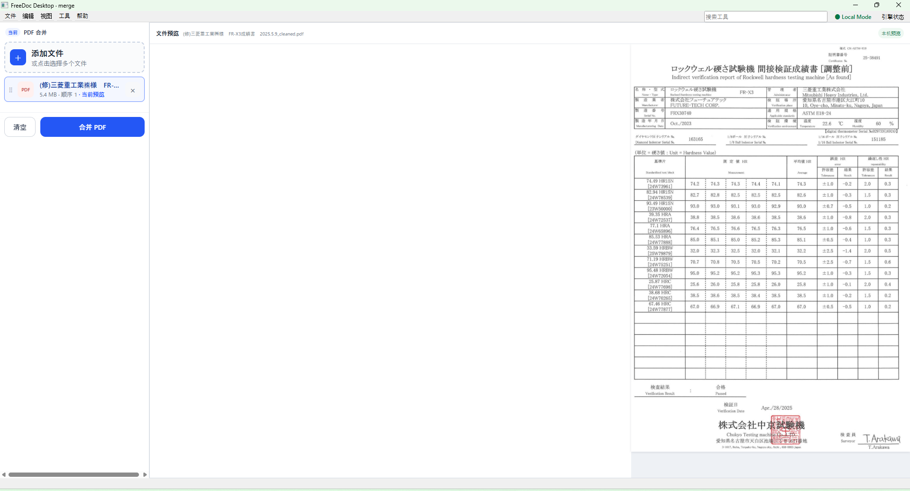

Features
FreeDoc 的主要功能
一个本地桌面应用覆盖 PDF 阅读、编辑、页面管理、OCR、Office 转换、水印和图片工作流。
▤
PDF 阅读
多文件、缩略图、连续滚动、页码、搜索、缩放、旋转、阅读位置记忆。
✎
PDF 编辑
文本、图片、矩形、线条、高亮、下划线、删除线及对象定位。
▦
页面管理
排序、删除、旋转、提取、裁剪、尺寸统一、空白页清理。
Aa
OCR
图片 OCR、扫描 PDF 可搜索化、OCR→DOCX、表格→Excel。
W
PDF → Word
文本重建与高保真视觉模式。
P
PDF → PowerPoint
高保真模式与可编辑重建路线。
X
PDF → Excel
数字 PDF 与表格内容提取。
O
Office → PDF
Word、Excel、PowerPoint 批量转 PDF，优先 Microsoft Office。
印
水印 / 图章
静态文字、页码、文件名、图章、背景与批量处理。
⇣
PDF 压缩
结构压缩与强力栅格压缩。
⇄
PDF 对比
逐页视觉差异检查。
▧
图片工具
图片→PDF、PDF→图片、批量缩放、旋转与格式转换。
